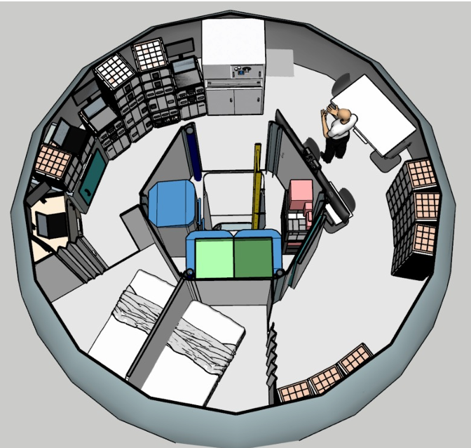
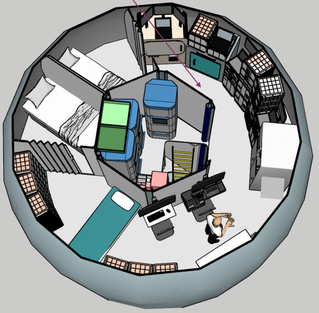

Cryonix
Lat: 3.6608° Lon: 138.12731°
Home
Housing
Laboratory
Suitports
Housing Module
Live View
Monitor


Live
Live
The base includes Crew Quarters for rest, a Galley and Ward Table for meals, a General Computer Station for mission operations, and Utilization areas for work and research. Support comes from Storage, ECLSS subsystems, and Hygiene facilities including the UWMS. Crew health is maintained with a dedicated Exercise area, while additional Utilization and ECLSS modules ensure sustainability.
Crew Quarters Galley & Ward Table
General Computer
Station Utilization
Storage
ECLSS & Other Subsystems
Hygiene UWMS
Exercise
Utilization & ECLSS